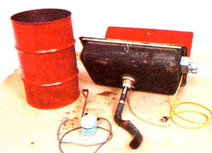
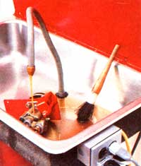
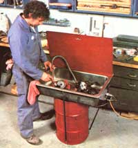
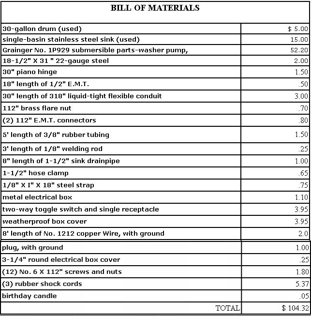
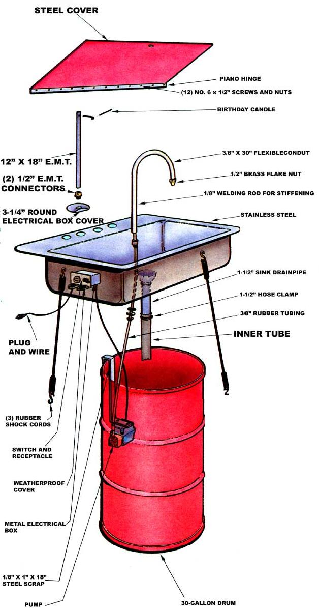

Any handyperson who's had the pleasure of using a real parts-cleaning tank has probably developed a bad case of the "wants" as a result of the experience. By comparison, the bucket-and-old-toothbrush method leaves a lot to be desired. Unfortunately, however, the steep prices of commercial parts washers put these devices out of the reach of most tinkerers ... since even the tiniest units start at better than $200, and the more useful 30-gallon models run $300 and up.
The dedicated recyclers at Mother's research center, however, recently decided that the frustration of trying to pick and scrape away decades' worth of slime from their ongoing supply of scavenged "treasures" was too much to bear. As a result of that necessity, we're able to show you the invention in the accompanying photographs: We've dubbed it a "made from recycled parts" recycled-parts washer.
If you examine a commercial parts-cleaning tank in a catalog, you'll note that its two major components are a reservoir for storing the fluid and a basin in which to do the scrubbing. So, in the spirit of "research and imitate". our team dragged out a used 30-gallon drum to serve as the former and bought a castoff stainless steel sink (one of the big single-basin models) for $15, from a local hardware store's scrap pile, for the latter.
As it happened, the sink covered the top of the drum neatly, so three rubber shock k cords stretched as shown in the photographs s have proved to be sufficient to hold the assembly together ... while still allowing the basin to be removed easily for tank cleaning or other service.
The sheet-metal cover for the basin does help limit the evaporation of the expensive solvent, but its major purpose is to contain a conflagration in the event that the flammable liquid ignites. The lid on our tank is formed from a sheet of 22-gauge steel and is held open, from behind, by a tower made from 1/2" electrical metallic tubing (E.M.T.). That stand is secured to the back of the sink with a round electrical box cover that has a 1/2" E.M.T. connector screwed to it. The tubing itself is attached to the connector with the setscrew, and has a bend which prevents the lid from being raised any higher than 5' short of vertical. Consequently, the lid will automatically fall closed unless it's actually held open.
The latch consists of a loop of 1/8" rod, connected to the E.M.T. tower, which fits through a 7/8" hole in the lid. We're using a small birthday candle, slipped through the hook, to hold the cover up. In the event of a blaze in the basin, the wax will melt and the lid will slam closed.
Now you may not expect to have any fires in your parts-washing tank, but we still encourage you to make the small additional effort to install a failsafe fire flap. After all, regardless of what solvent you use in your tank, you're likely to be working with a liquid having a very low flash point.
To produce that cleansing stream of solvent in your unit's sink, you'll need a pump. And, unless you're lucky enough to come across a good secondhand one, you're probably going to be forced-just as we were-to buy a new solvent mover. The circulator we're using was ordered through a hardware store from Grainger's and is specifically designed to handle the flammable liquid. (See the parts list for the order number and price.)
The model we chose is submersible, so we just hung it, in the drum, on a 1/8" X I" X 18" steel strap that's hooked over the barrel's lip. From the pump, the liquid is driven up through a length of 3/8" rubber tubing that slips inside an adjustable nozzle.
To complete the hose assembly, our researchers first bored a 3/4" hole in the sink's bottom and screwed a 1/2" E.M.T. connector into the opening. A 30" length of liquidtight flexible conduit was then attached to the coupling with the setscrew. A piece of 1/8" welding rod helps stiffen the flexible conduit, and a 1/2" flare nut, forced over the outlet, makes an effective nozzle. Finally, the 3/8" rubber hose from the pump can be slipped inside the flexible conduit (the welding rod goes between the conduit and the tube) and up to the nozzle.
Fluid returns to the reservoir, through the sink drain, by way of 8" of standard chromed drainpipe ... which has an 18"-long section Of Motorcycle inner tube clamped to its end. This length of return line drops the dirty solvent to the bottom of the tank, where solids can settle out ... making certain that the pump, which is positioned higher up, will draw comparatively clean fluid.
Standard parts-washer solvent is quite expensive (it usually goes for better than $7.50 per gallon), but the cost of filling the unit can be trimmed considerably. For example, there's no reason for the whole reservoir to be filled with the cleaning fluid ... since it's unlikely that more than a few gallons will see action at one time. Consequently, you can fill the tank partially with water. Because the petroleum products are lighter than water, the H20 sinks to the bottom, and the working fluid rises to the top.
Of course, the submersible pump needed a source of electricity, so a metal electrical box was screwed to the right side of the basin (under the lip) and a combination toggle switch and duplex receptacle was installed. The circulator's hot wire passes through the switch on its way to a wall outlet, allowing the pump to be turned on and off. In addition, the receptacle next to the control offers a ready outlet for any work done in the basin. (To provide safety in the event of splashes, the box has. a weatherproof cover.)
All told, we've invested just a little more than $100 in our parts-washing tank . . or approximately half of the price of the closest (smaller!) competition. And, by trimming the cost by that amount, we've managed to turn a dreamed-about luxury into a practical addition to the workshop.
EDITOR'S NOTE: If you'd like to find out about an inexpensive way to strip the grime from your dirty engine before you even have to lay a wrench to it, just turn the page!
|
 STAFF PHOTOS |
 |
 |
|
 |
 |
|